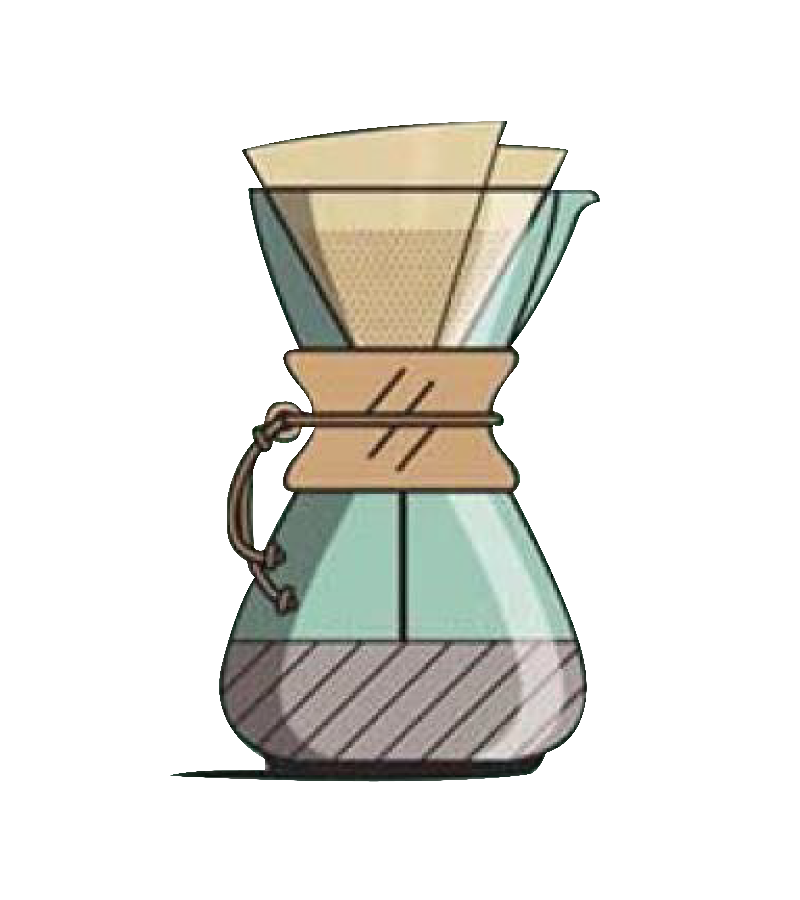

A cylindrical pot with a plunger and built-in filter screen that presses hot water through ground coffee: that’s the simple beauty of the French press, method of choice for many all over the world, creating an earthy, rich taste in the cup.
Chemex
What makes Chemex truly unique is the design of its proprietary bonded coffee filters which are considerably heavier than others and result in an unmatched clean cup. This makes Chemex the perfect choice for enjoying more acidic or floral light roast coffees.

Moka Pot
A tiny, Italian-made, eight-sided wonder, the Moka pot has been with us through our fair share of postage-stamp-sized kitchens and far-flung journeys.